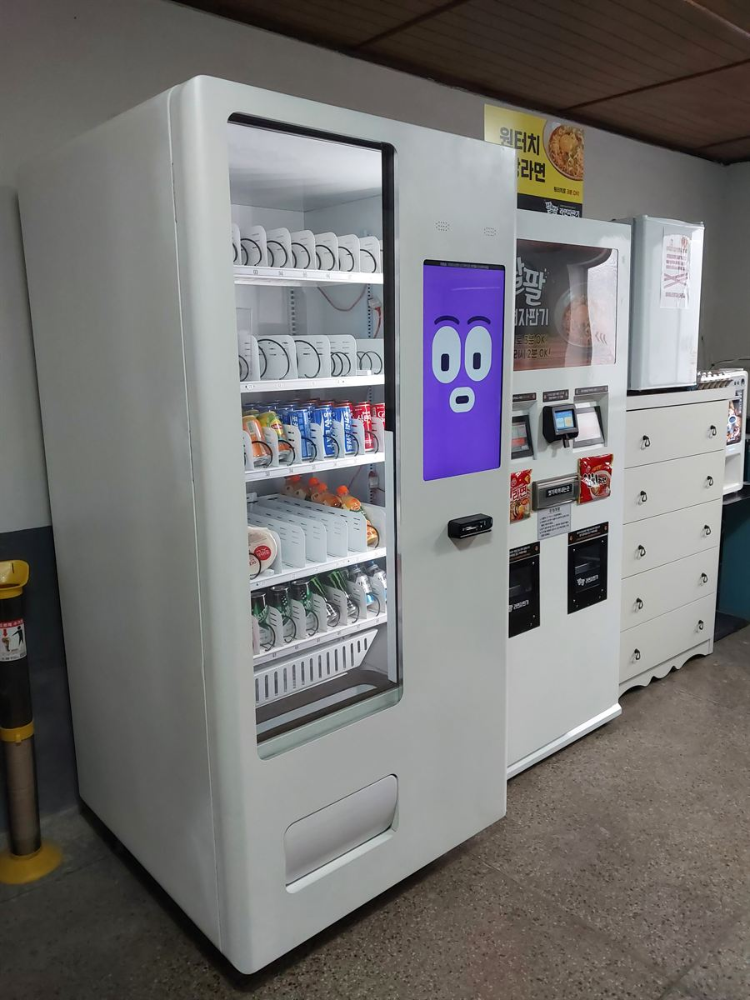
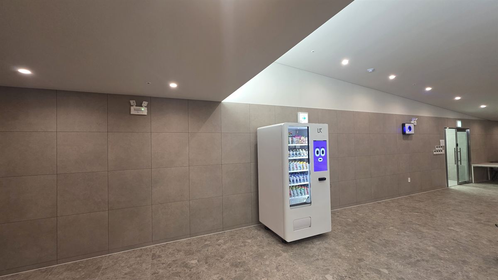
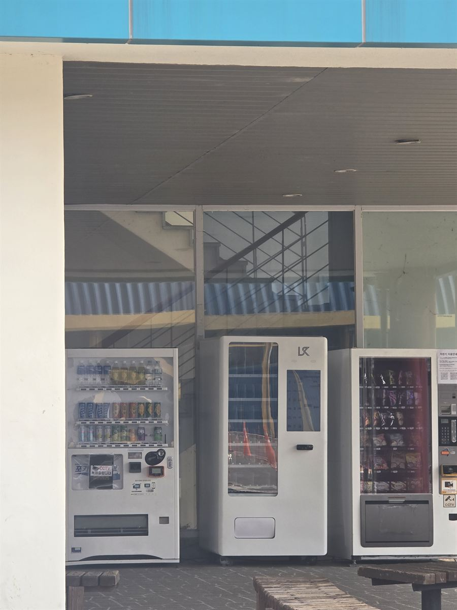

설치 후기
H포스가 직접 설치한 전국 카드단말기·포스기·키오스크·무인자판기 현장 기록입니다. (전체 257건 · 1/26 페이지)

충주 무인자판기 설치 완료 — 무인 라면 코너 옆 냉장형 한 대
라면 조리 자판기만 있는 자리에서는 마실 것이 없어 손님이 그냥 나갑니다. 유리문 냉장형 한 대를 옆에 붙여 컵라면·음료·컵커피를 층으로 나눠 담고, 앱으로 내부 온도와 칸별 재고를 원격으로 확인합니다.

금천구 무인자판기 설치 완료 — 지식산업센터 휴게실에 과자·음료 한 대
칸 50개를 위는 과자, 아래는 음료로 나눠 담아 한 대로 매점 역할을 하게 구성했습니다. 앱으로 칸 번호별 재고를 보고, 카드·간편결제만 받아 동전 관리가 없습니다.

안양 무인자판기 설치 완료 — 빌딩 로비 복도에 슬림형 한 대
복도 통행 폭을 거의 안 잡아먹는 슬림형 냉장 자판기 한 대를 로비 벽면에 붙였습니다. 바퀴로 자리를 옮길 수 있고, 재고는 앱으로 보며 카드·간편결제만 받습니다.

대구 달서구 무인자판기 설치 완료 — 건물 현관 쉼터 음료·스낵 3대 나란히
건물 현관 필로티 아래 벤치 옆에 음료·스낵·스마트 자판기를 나란히 놓은 사례입니다. 기계마다 역할을 나누면 줄이 겹치지 않고 채우는 일도 한 대씩 순서대로 끝납니다.

목포 무인자판기 설치 완료 — 셀프 사진관 전면 터치스크린·이동식 하부장
앞면이 통째로 화면이라 어두운 매장에서도 눈에 띄고, 상품을 바꿀 때 진열 대신 화면만 고치면 됩니다. 바퀴 달린 잠금 하부장을 받쳐 여유 재고를 넣어 두고 자리도 옮길 수 있습니다.

천안 무인자판기 설치 완료 — 스터디카페 네 단 서른두 칸 24시간 무인 운영
네 단을 모두 열어 서른두 칸을 잡은 스터디카페 자판기입니다. 무거운 것은 위, 가벼운 간식은 아래에 두고 배출구 폭까지 맞춰 야간에도 사람 없이 돌아가게 구성했습니다.

고령 무인자판기 설치 완료 — 공장 휴게실 한 단 여덟 칸 상품 구성
문을 열면 한 단에 여덟 칸, 칸마다 번호와 스프링이 들어갑니다. 칸막이를 옮겨 상품 폭을 맞추고 재고는 앱에서 칸 번호 그대로 확인합니다.

전주 무인자판기 설치 완료 — 전자담배 액상 성인인증 2대 구성
전자담배 액상처럼 어른만 살 수 있는 품목은 성인인증이 되는 기종인지부터 확인해야 합니다. 대형기 한 대에 소형기를 붙여 진열 칸을 늘리고, 재고와 매출은 앱에서 원격으로 봅니다.

김해 무인자판기 설치 완료 — 게스트하우스 4개 국어 터치스크린
화면 버튼 한 번으로 한국어·영어·중국어·일본어가 바뀌어, 외국인 손님이 직접 고르고 결제합니다. 앱으로 재고를 보고 설치비는 무료입니다.

여수 포스기 설치 완료 — 여서동·여수밤바다 상권 통합 관리
여서동·학동·여수밤바다 관광상권 매장에 포스와 카드단말기 통합 관리. 유선·무선 카드결제기까지 설치비 무료.